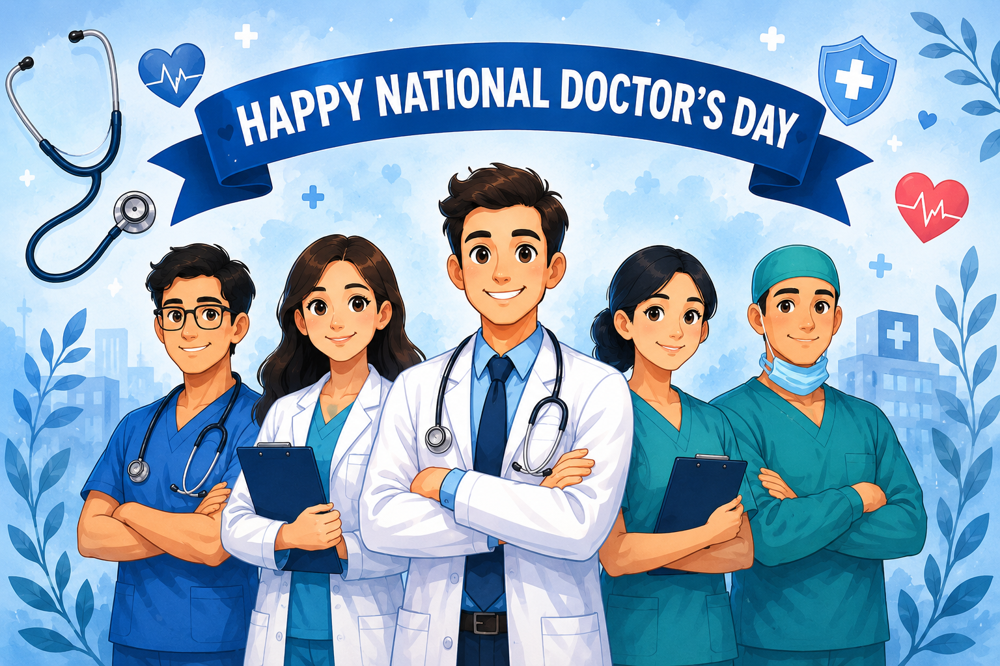

"Wherever the art of medicine is loved, there is also a love of humanity."
– Hippocrates

Introduction 🌟
Doctors work tirelessly to protect and improve the health of millions of people. They diagnose illnesses, perform surgeries, provide emergency care, and offer comfort to patients and their families. National Doctor's Day recognizes their dedication, sacrifice, and service. The theme "Behind the Mask: Who Heals the Healers?" reminds us that doctors also need care, support, and appreciation.
What is National Doctor's Day? 🩺
Celebrated in India every year on 1st July.
Honors the contribution of doctors to society.
Recognizes their dedication to public health.
Promotes awareness about healthcare services.
Encourages respect for medical professionals.
The Legacy of Dr. B. C. Roy 👨⚕️
One of India's most respected physicians and healthcare pioneers.
Born on 1 July 1882 and passed away on 1 July 1962.
Served humanity through medicine and public service.
Played a major role in developing hospitals and medical institutions.
Believed that medicine is a service to society.
1 July was chosen for National Doctor's Day because it marks both his birth and death anniversary.
The day honors his contributions to healthcare and medical education.
His values of compassion and dedication continue to inspire doctors.
Why Are Doctors Called Real-Life Heroes? 🦸
Diagnose and treat diseases.
Perform surgeries and medical procedures.
Provide emergency medical care.
Work during epidemics, pandemics, and disasters.
Promote preventive healthcare.
Save countless lives every day.
Behind the White Coat: Challenges Faced by Doctors ⚕️
Long working hours and night shifts.
Physical exhaustion and lack of rest.
High-pressure decision making.
Exposure to infectious diseases.
Emotional burden of treating critically ill patients.
Support and counseling are important for healthcare workers.
Who Heals the Healers? ❤️
Family and friends provide emotional support.
Nurses and healthcare teams share responsibilities.
Mental health professionals help manage stress.
Hospitals can provide wellness programs.
Society can support doctors through respect and appreciation.
Lessons We Can Learn from Doctors 📚
Compassion and empathy towards others.
Dedication and commitment to responsibilities.
Lifelong learning and continuous improvement.
Service to humanity.
Patience and resilience during difficult times.
How Can We Show Appreciation for Doctors? 🌷
Express gratitude and say "Thank You".
Respect their time and efforts.
Follow medical advice responsibly.
Promote awareness about healthcare workers.
Support initiatives for doctors' well-being.
Participate in community health programs.
Treat doctors with kindness, patience, and respect.
Conclusion 🎯
National Doctor's Day is a reminder of the sacrifices and dedication of doctors who work tirelessly to protect human life. The theme "Behind the Mask: Who Heals the Healers?" encourages society to recognize that doctors are not only healthcare providers but also individuals who need care, support, and appreciation. By respecting their efforts and supporting their well-being, we help create a healthier and more compassionate society.
Message to Doctors 💖
✨ Thank you for your dedication, compassion, and selfless service. Your efforts make our communities healthier, safer, and stronger. Happy National Doctor's Day! ✨